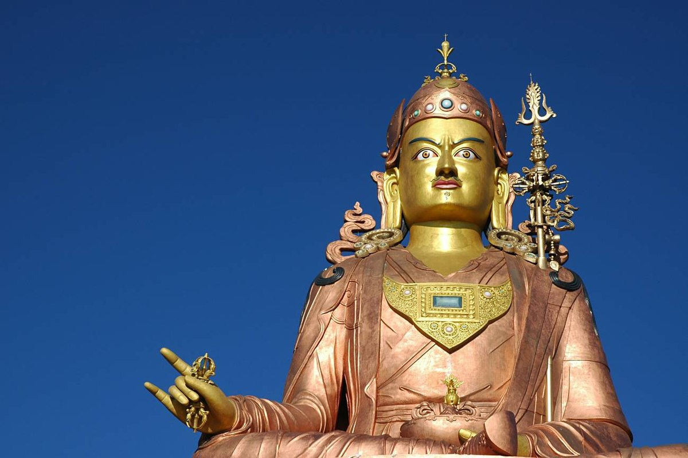

SUBDIVISIONS

Sikkim has six districts – Gangtok District, Mangan District, Namchi District,
Pakyong District, Geyzing District and Soreng District.
The district capitals are Gangtok, Mangan, Namchi, Pakyong, Gyalshing and Soreng respectively.
These six districts are further divided into 16 subdivisions; Pakyong, Rongli,
Rangpo and Gangtok are the subdivisions of the Gangtok and Pakyong Districts.
Soreng, Yuksom, Gyalshing and Dentam are the subdivisions of the Geyzing and Soreng district.
Chungthang, Dzongu, Kabi and Mangan are the subdivisions of the Mangan district.
Ravongla, Jorethang, Namchi and Yangyang are the subdivisions of the Namchi district.
Each of Sikkim's districts is overseen by a state government appointee, the district collector,
who is in charge of the administration of the civilian areas of the district.
The Indian Army has control over a large part of the state,
as Sikkim forms part of a sensitive border area with China.
Many areas are restricted to foreigners, and official permits are needed to visit them.